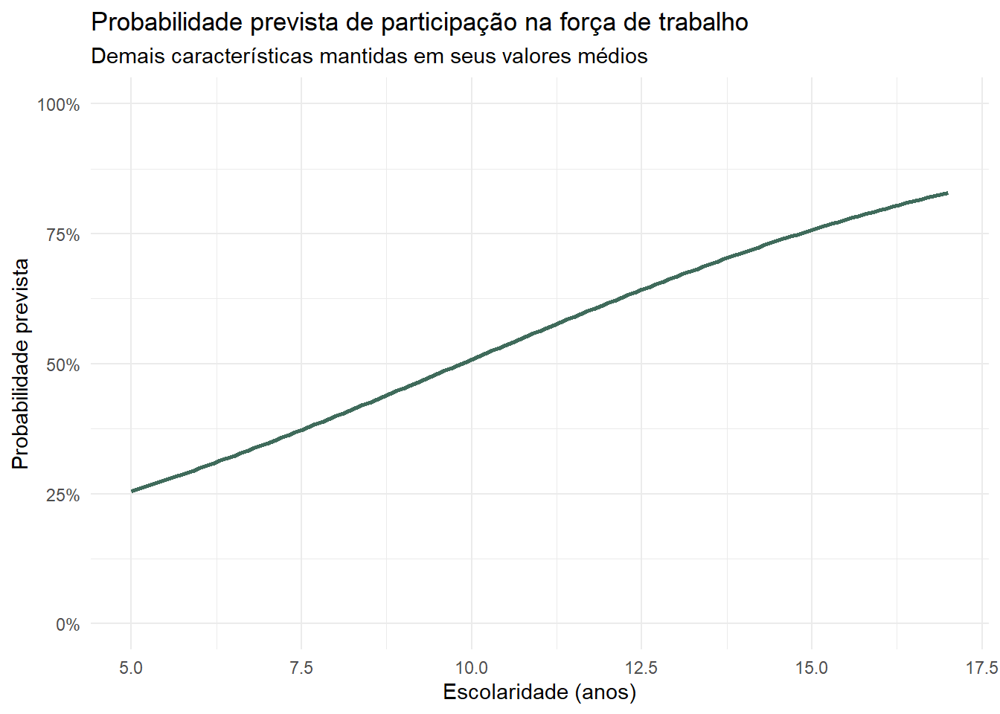
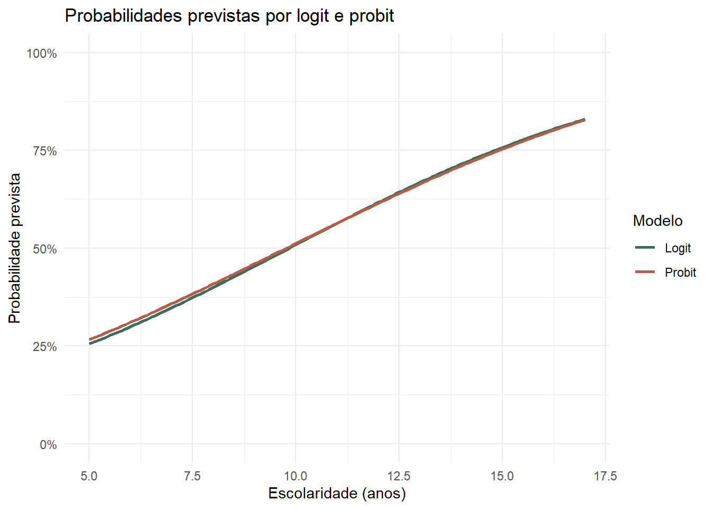
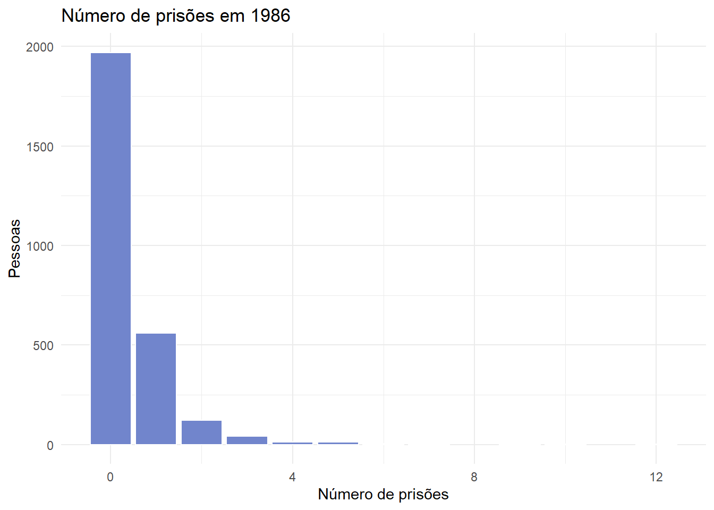

install.packages(c("wooldridge", "mfx", "stargazer"))22 Modelos para resultados binários e contagens
Participação no mercado de trabalho e número de ocorrências
No capítulo anterior, a variável dependente — o salário por hora — era numérica e contínua. Entretanto, muitas perguntas econômicas envolvem resultados de outra natureza:
- uma pessoa participa ou não do mercado de trabalho;
- uma família compra ou não determinado produto;
- uma empresa entra ou não em um mercado;
- quantos filhos existem em um domicílio;
- quantas ocorrências são registradas em determinado período.
Neste capítulo, utilizaremos o R para trabalhar com dois tipos de resultado:
- binário: assume os valores 0 e 1;
- contagem: assume valores inteiros não negativos, como 0, 1, 2, 3 e assim por diante.
NotaObjetivos do capítulo
Ao final deste capítulo, você deverá ser capaz de:
- reconhecer variáveis dependentes binárias e de contagem;
- estimar e interpretar um modelo de probabilidade linear;
- compreender por que esse modelo pode produzir probabilidades inválidas;
- estimar modelos logit e probit com
glm(); - calcular probabilidades previstas, razões de chances e efeitos marginais;
- estimar e interpretar um modelo de Poisson;
- escolher a família adequada dentro de
glm(); - reconhecer os limites básicos de cada modelo.
22.1 Preparando o ambiente
Utilizaremos duas bases do pacote wooldridge, o pacote mfx para automatizar efeitos marginais e o stargazer para organizar tabelas de modelos. Caso ainda não estejam instalados, execute uma única vez:
Agora carregamos o tidyverse e as bases:
library(tidyverse)
library(wooldridge)
data(mroz, package = "wooldridge")
data(crime1, package = "wooldridge")22.2 Uma variável dependente binária
Na base mroz, cada linha representa uma mulher casada. A variável inlf indica sua situação em relação à força de trabalho:
inlf = 1: participa da força de trabalho;inlf = 0: não participa da força de trabalho.
Nossa pergunta orientadora será:
Como renda familiar adicional, escolaridade, experiência, idade e presença de filhos estão associadas à probabilidade de participação feminina no mercado de trabalho?
Vamos selecionar as variáveis utilizadas no material original:
mroz_modelos <- mroz |>
select(
inlf,
nwifeinc,
educ,
exper,
expersq,
age,
kidslt6,
kidsge6
)
glimpse(mroz_modelos)Rows: 753
Columns: 8
$ inlf <int> 1, 1, 1, 1, 1, 1, 1, 1, 1, 1, 1, 1, 1, 1, 1, 1, 1, 1, 1, 1, 1…
$ nwifeinc <dbl> 10.910060, 19.499981, 12.039910, 6.799996, 20.100058, 9.85905…
$ educ <int> 12, 12, 12, 12, 14, 12, 16, 12, 12, 12, 12, 11, 12, 12, 10, 1…
$ exper <int> 14, 5, 15, 6, 7, 33, 11, 35, 24, 21, 15, 14, 0, 14, 6, 9, 20,…
$ expersq <int> 196, 25, 225, 36, 49, 1089, 121, 1225, 576, 441, 225, 196, 0,…
$ age <int> 32, 30, 35, 34, 31, 54, 37, 54, 48, 39, 33, 42, 30, 43, 43, 3…
$ kidslt6 <int> 1, 0, 1, 0, 1, 0, 0, 0, 0, 0, 0, 0, 1, 0, 0, 0, 0, 0, 0, 0, 0…
$ kidsge6 <int> 0, 2, 3, 3, 2, 0, 2, 0, 2, 2, 1, 1, 2, 2, 1, 3, 2, 5, 0, 4, 2…Antes de estimar qualquer modelo, examinamos o resultado:
mroz_modelos |>
count(inlf) |>
mutate(
proporcao = n / sum(n)
) inlf n proporcao
1 0 325 0.4316069
2 1 428 0.5683931Como inlf contém apenas zeros e uns, sua média é a proporção de mulheres que participam da força de trabalho:
mean(mroz_modelos$inlf)[1] 0.568393122.3 Modelo de probabilidade linear
Uma primeira possibilidade é utilizar a regressão linear:
\[ inlf_i=\beta_0+\beta_1nwifeinc_i+\beta_2educ_i +\beta_3exper_i+\beta_4exper_i^2+\beta_5age_i +\beta_6kidslt6_i+\beta_7kidsge6_i+u_i. \]
Quando a variável dependente assume 0 ou 1, a média condicional corresponde a uma probabilidade:
\[ E(inlf\mid x)=P(inlf=1\mid x). \]
Por isso, essa regressão é chamada de modelo de probabilidade linear (MPL).
modelo_mpl <- lm(
inlf ~ nwifeinc + educ + exper + I(exper^2) +
age + kidslt6 + kidsge6,
data = mroz_modelos
)
summary(modelo_mpl)
Call:
lm(formula = inlf ~ nwifeinc + educ + exper + I(exper^2) + age +
kidslt6 + kidsge6, data = mroz_modelos)
Residuals:
Min 1Q Median 3Q Max
-0.93432 -0.37526 0.08833 0.34404 0.99417
Coefficients:
Estimate Std. Error t value Pr(>|t|)
(Intercept) 0.5855192 0.1541780 3.798 0.000158 ***
nwifeinc -0.0034052 0.0014485 -2.351 0.018991 *
educ 0.0379953 0.0073760 5.151 3.32e-07 ***
exper 0.0394924 0.0056727 6.962 7.38e-12 ***
I(exper^2) -0.0005963 0.0001848 -3.227 0.001306 **
age -0.0160908 0.0024847 -6.476 1.71e-10 ***
kidslt6 -0.2618105 0.0335058 -7.814 1.89e-14 ***
kidsge6 0.0130122 0.0131960 0.986 0.324415
---
Signif. codes: 0 '***' 0.001 '**' 0.01 '*' 0.05 '.' 0.1 ' ' 1
Residual standard error: 0.4271 on 745 degrees of freedom
Multiple R-squared: 0.2642, Adjusted R-squared: 0.2573
F-statistic: 38.22 on 7 and 745 DF, p-value: < 2.2e-16No MPL, o coeficiente de uma variável numérica é interpretado como uma mudança em probabilidade, mantendo as demais constantes. Por exemplo, o coeficiente de educ representa a variação, em pontos da escala de 0 a 1, associada a um ano adicional de escolaridade.
coef(modelo_mpl)["educ"] educ
0.0379953 Para converter essa medida em pontos percentuais, multiplicamos por 100:
100 * coef(modelo_mpl)["educ"] educ
3.79953
ImportanteProbabilidade e ponto percentual
Uma variação de 0,04 na escala de probabilidade corresponde a 4 pontos percentuais. Isso não é necessariamente igual a um aumento de 4% em relação à probabilidade inicial.
22.3.1 O principal limite do MPL
A reta estimada pelo MPL não possui limites. Por isso, algumas combinações das explicativas podem produzir valores menores que 0 ou maiores que 1, que não são probabilidades válidas.
Vamos preservar os dois perfis utilizados no material original:
perfis_mulheres <- tibble(
perfil = c("Mulher 1", "Mulher 2"),
nwifeinc = c(50, 0),
educ = c(7, 17),
exper = c(0, 30),
age = c(25, 52),
kidslt6 = c(2, 0),
kidsge6 = c(0, 0)
)
perfis_mulheres |>
mutate(
probabilidade_mpl = predict(
modelo_mpl,
newdata = perfis_mulheres
)
)# A tibble: 2 × 8
perfil nwifeinc educ exper age kidslt6 kidsge6 probabilidade_mpl
<chr> <dbl> <dbl> <dbl> <dbl> <dbl> <dbl> <dbl>
1 Mulher 1 50 7 0 25 2 0 -0.245
2 Mulher 2 0 17 30 52 0 0 1.04 O primeiro perfil pode receber uma previsão negativa e o segundo, uma previsão superior a 1. O cálculo está correto para uma reta, mas o resultado não faz sentido como probabilidade.
Também podemos verificar esse problema em toda a amostra:
previsoes_mpl <- fitted(modelo_mpl)
tibble(
menor_previsao = min(previsoes_mpl),
maior_previsao = max(previsoes_mpl),
abaixo_de_zero = sum(previsoes_mpl < 0),
acima_de_um = sum(previsoes_mpl > 1)
)# A tibble: 1 × 4
menor_previsao maior_previsao abaixo_de_zero acima_de_um
<dbl> <dbl> <int> <int>
1 -0.345 1.13 16 17
NotaEntenda mais: outros limites do modelo de probabilidade linear
Além de permitir previsões fora do intervalo entre 0 e 1, o MPL possui erros heterocedásticos por construção. Se \(y\) é binária e \(p(x)=P(y=1\mid x)\), então:
\[ Var(y\mid x)=p(x)[1-p(x)]. \]
Essa variância muda com \(x\). O MPL ainda pode ser útil como aproximação simples e seus coeficientes são fáceis de interpretar, mas a inferência requer cuidado, frequentemente com erros-padrão robustos.
22.4 Modelo logit
O modelo logit substitui a reta de probabilidades por uma curva logística. Assim, todas as probabilidades previstas permanecem entre 0 e 1.
Em R, logit pertence à família dos modelos lineares generalizados, estimados com glm():
modelo_logit <- glm(
inlf ~ nwifeinc + educ + exper + I(exper^2) +
age + kidslt6 + kidsge6,
family = binomial(link = "logit"),
data = mroz_modelos
)
summary(modelo_logit)
Call:
glm(formula = inlf ~ nwifeinc + educ + exper + I(exper^2) + age +
kidslt6 + kidsge6, family = binomial(link = "logit"), data = mroz_modelos)
Coefficients:
Estimate Std. Error z value Pr(>|z|)
(Intercept) 0.425452 0.860365 0.495 0.62095
nwifeinc -0.021345 0.008421 -2.535 0.01126 *
educ 0.221170 0.043439 5.091 3.55e-07 ***
exper 0.205870 0.032057 6.422 1.34e-10 ***
I(exper^2) -0.003154 0.001016 -3.104 0.00191 **
age -0.088024 0.014573 -6.040 1.54e-09 ***
kidslt6 -1.443354 0.203583 -7.090 1.34e-12 ***
kidsge6 0.060112 0.074789 0.804 0.42154
---
Signif. codes: 0 '***' 0.001 '**' 0.01 '*' 0.05 '.' 0.1 ' ' 1
(Dispersion parameter for binomial family taken to be 1)
Null deviance: 1029.75 on 752 degrees of freedom
Residual deviance: 803.53 on 745 degrees of freedom
AIC: 819.53
Number of Fisher Scoring iterations: 4A estrutura da fórmula é semelhante à de lm(). A diferença central está no argumento:
family = binomial(link = "logit")Ele informa ao R que a variável dependente é binária e que desejamos utilizar a função logística.
22.4.1 Sinal dos coeficientes
O sinal continua sendo informativo:
- coeficiente positivo: valores maiores da explicativa estão associados a maior probabilidade do evento;
- coeficiente negativo: valores maiores estão associados a menor probabilidade.
Entretanto, o valor bruto do coeficiente está na escala do logaritmo das chances, e não em pontos percentuais.
NotaEntenda mais: da função logística à probabilidade
O modelo parte de um índice linear:
\[ \eta_i=\mathbf{x}_i'\boldsymbol{\beta}. \]
A função logística transforma qualquer valor real de \(\eta_i\) em uma probabilidade entre 0 e 1:
\[ P(y_i=1\mid\mathbf{x}_i) =\frac{\exp(\eta_i)}{1+\exp(\eta_i)} =\frac{1}{1+\exp(-\eta_i)}. \]
Equivalentemente:
\[ \log\left(\frac{p_i}{1-p_i}\right) =\mathbf{x}_i'\boldsymbol{\beta}. \]
O lado esquerdo é o logaritmo das chances do evento.
22.5 Probabilidades previstas
Para obter probabilidades diretamente, utilizamos predict() com type = "response":
perfis_mulheres |>
mutate(
probabilidade_mpl = predict(
modelo_mpl,
newdata = perfis_mulheres
),
probabilidade_logit = predict(
modelo_logit,
newdata = perfis_mulheres,
type = "response"
)
)# A tibble: 2 × 9
perfil nwifeinc educ exper age kidslt6 kidsge6 probabilidade_mpl
<chr> <dbl> <dbl> <dbl> <dbl> <dbl> <dbl> <dbl>
1 Mulher 1 50 7 0 25 2 0 -0.245
2 Mulher 2 0 17 30 52 0 0 1.04
# ℹ 1 more variable: probabilidade_logit <dbl>As previsões do logit permanecem no intervalo permitido.
Também podemos calcular a probabilidade para um perfil com características médias:
perfil_medio <- mroz_modelos |>
summarise(
across(
c(nwifeinc, educ, exper, age, kidslt6, kidsge6),
mean
)
)
predict(
modelo_logit,
newdata = perfil_medio,
type = "response"
) 1
0.6316395
AvisoO perfil médio pode não representar uma pessoa real
A média pode produzir valores como 0,24 criança menor de seis anos. O perfil médio é útil para demonstração, mas previsões para perfis substantivamente possíveis costumam ser mais fáceis de comunicar.
22.6 Razões de chances
Ao exponenciar os coeficientes do logit, obtemos razões de chances (odds ratios):
razoes_chances <- exp(coef(modelo_logit))
razoes_chances(Intercept) nwifeinc educ exper I(exper^2) age
1.5302825 0.9788810 1.2475360 1.2285929 0.9968509 0.9157386
kidslt6 kidsge6
0.2361344 1.0619557 Para educ, podemos calcular a mudança percentual nas chances associada a um ano adicional de escolaridade:
100 * (razoes_chances["educ"] - 1) educ
24.7536 Uma razão de chances maior que 1 indica aumento das chances; menor que 1 indica redução.
ImportanteChance não é o mesmo que probabilidade
Se a probabilidade é \(p\), a chance é \(p/(1-p)\). Uma razão de chances de 1,20 significa que as chances são 20% maiores, não que a probabilidade aumentou 20 pontos percentuais.
22.7 Efeitos marginais
Em um modelo não linear, a mudança na probabilidade associada a uma explicativa depende do perfil considerado. Para escolaridade, o efeito marginal individual no logit é:
\[ \frac{\partial P(y_i=1\mid x_i)}{\partial educ_i} =\beta_{educ}\,p_i(1-p_i). \]
Podemos calcular o efeito para cada mulher e depois obter o efeito marginal médio:
probabilidades_logit <- predict(
modelo_logit,
type = "response"
)
efeito_educ_individual <-
coef(modelo_logit)["educ"] *
probabilidades_logit *
(1 - probabilidades_logit)
efeito_marginal_medio_educ <- mean(
efeito_educ_individual
)
efeito_marginal_medio_educ[1] 0.03949652Em pontos percentuais:
100 * efeito_marginal_medio_educ[1] 3.949652Esse resultado resume a variação média estimada na probabilidade associada a um ano adicional de escolaridade, mantendo a estrutura do modelo.
NotaEntenda mais: por que o efeito marginal varia?
No logit, a inclinação da curva depende de \(p_i(1-p_i)\). Ela tende a ser maior em probabilidades intermediárias e menor quando a probabilidade está próxima de 0 ou 1. Por isso, o mesmo aumento em escolaridade não produz exatamente a mesma mudança de probabilidade para todos os perfis.
22.8 Visualizando probabilidades
Vamos variar a escolaridade entre 5 e 17 anos e manter as demais características em seus valores médios:
perfis_educacao <- tibble(
educ = seq(5, 17, by = 0.1),
nwifeinc = mean(mroz_modelos$nwifeinc),
exper = mean(mroz_modelos$exper),
age = mean(mroz_modelos$age),
kidslt6 = mean(mroz_modelos$kidslt6),
kidsge6 = mean(mroz_modelos$kidsge6)
) |>
mutate(
probabilidade = predict(
modelo_logit,
newdata = pick(everything()),
type = "response"
)
)
ggplot(
perfis_educacao,
aes(x = educ, y = probabilidade)
) +
geom_line(color = "#3F6B5B", linewidth = 1) +
scale_y_continuous(
limits = c(0, 1),
labels = scales::label_percent()
) +
labs(
title = "Probabilidade prevista de participação na força de trabalho",
subtitle = "Demais características mantidas em seus valores médios",
x = "Escolaridade (anos)",
y = "Probabilidade prevista"
) +
theme_minimal()
O gráfico comunica a probabilidade na escala em que a pergunta foi formulada, evitando interpretar diretamente os coeficientes em log-chances.
22.9 Modelo probit
O probit também mantém as probabilidades entre 0 e 1, mas utiliza a função de distribuição acumulada normal padrão:
modelo_probit <- glm(
inlf ~ nwifeinc + educ + exper + I(exper^2) +
age + kidslt6 + kidsge6,
family = binomial(link = "probit"),
data = mroz_modelos
)
summary(modelo_probit)
Call:
glm(formula = inlf ~ nwifeinc + educ + exper + I(exper^2) + age +
kidslt6 + kidsge6, family = binomial(link = "probit"), data = mroz_modelos)
Coefficients:
Estimate Std. Error z value Pr(>|z|)
(Intercept) 0.2700736 0.5080782 0.532 0.59503
nwifeinc -0.0120236 0.0049392 -2.434 0.01492 *
educ 0.1309040 0.0253987 5.154 2.55e-07 ***
exper 0.1233472 0.0187587 6.575 4.85e-11 ***
I(exper^2) -0.0018871 0.0005999 -3.145 0.00166 **
age -0.0528524 0.0084624 -6.246 4.22e-10 ***
kidslt6 -0.8683247 0.1183773 -7.335 2.21e-13 ***
kidsge6 0.0360056 0.0440303 0.818 0.41350
---
Signif. codes: 0 '***' 0.001 '**' 0.01 '*' 0.05 '.' 0.1 ' ' 1
(Dispersion parameter for binomial family taken to be 1)
Null deviance: 1029.7 on 752 degrees of freedom
Residual deviance: 802.6 on 745 degrees of freedom
AIC: 818.6
Number of Fisher Scoring iterations: 4Os coeficientes de logit e probit estão em escalas diferentes e não devem ser comparados diretamente. Podemos comparar sinais e, principalmente, probabilidades previstas:
comparacao_binarios <- perfis_educacao |>
select(-probabilidade) |>
mutate(
Logit = predict(
modelo_logit,
newdata = pick(everything()),
type = "response"
),
Probit = predict(
modelo_probit,
newdata = pick(everything()),
type = "response"
)
) |>
pivot_longer(
cols = c(Logit, Probit),
names_to = "modelo",
values_to = "probabilidade"
)
ggplot(
comparacao_binarios,
aes(x = educ, y = probabilidade, color = modelo)
) +
geom_line(linewidth = 1) +
scale_y_continuous(
limits = c(0, 1),
labels = scales::label_percent()
) +
scale_color_manual(
values = c("Logit" = "#3F6B5B", "Probit" = "#B45F4A")
) +
labs(
title = "Probabilidades previstas por logit e probit",
x = "Escolaridade (anos)",
y = "Probabilidade prevista",
color = "Modelo"
) +
theme_minimal()
Nesta aplicação, as duas curvas tendem a ser próximas. A escolha entre logit e probit deve considerar a tradição da área, a interpretação desejada e a robustez dos resultados.
NotaEntenda mais: diferença formal entre logit e probit
O logit utiliza a distribuição logística:
\[ P(y=1\mid x)=\Lambda(x'\beta). \]
O probit utiliza a distribuição normal padrão:
\[ P(y=1\mid x)=\Phi(x'\beta). \]
As distribuições possuem formatos semelhantes, mas caudas diferentes. Como a escala dos parâmetros não é a mesma, probabilidades e efeitos marginais são mais apropriados para comparação do que os coeficientes brutos.
22.10 Automatizando efeitos marginais com mfx
Calculamos anteriormente o efeito marginal médio da escolaridade passo a passo. O pacote mfx automatiza esse procedimento e também calcula erros-padrão, estatísticas de teste e valores-p.
Para obter efeitos marginais médios, usamos atmean = FALSE:
efeitos_logit_mfx <- mfx::logitmfx(
inlf ~ nwifeinc + educ + exper + I(exper^2) +
age + kidslt6 + kidsge6,
data = mroz_modelos,
atmean = FALSE
)
efeitos_logit_mfxCall:
mfx::logitmfx(formula = inlf ~ nwifeinc + educ + exper + I(exper^2) +
age + kidslt6 + kidsge6, data = mroz_modelos, atmean = FALSE)
Marginal Effects:
dF/dx Std. Err. z P>|z|
nwifeinc -0.00381181 0.00153898 -2.4769 0.013255 *
educ 0.03949652 0.00846811 4.6641 3.099e-06 ***
exper 0.03676411 0.00655577 5.6079 2.048e-08 ***
I(exper^2) -0.00056326 0.00018795 -2.9968 0.002728 **
age -0.01571936 0.00293269 -5.3600 8.320e-08 ***
kidslt6 -0.25775366 0.04263493 -6.0456 1.489e-09 ***
kidsge6 0.01073482 0.01339130 0.8016 0.422769
---
Signif. codes: 0 '***' 0.001 '**' 0.01 '*' 0.05 '.' 0.1 ' ' 1Na tabela, a coluna dF/dx apresenta os efeitos marginais. O resultado de educ deve coincidir com o cálculo manual realizado anteriormente, salvo pequenas diferenças de arredondamento.
Podemos fazer o mesmo para o probit:
efeitos_probit_mfx <- mfx::probitmfx(
inlf ~ nwifeinc + educ + exper + I(exper^2) +
age + kidslt6 + kidsge6,
data = mroz_modelos,
atmean = FALSE
)
efeitos_probit_mfxCall:
mfx::probitmfx(formula = inlf ~ nwifeinc + educ + exper + I(exper^2) +
age + kidslt6 + kidsge6, data = mroz_modelos, atmean = FALSE)
Marginal Effects:
dF/dx Std. Err. z P>|z|
nwifeinc -0.00361618 0.00146972 -2.4604 0.013876 *
educ 0.03937009 0.00726571 5.4186 6.006e-08 ***
exper 0.03709734 0.00516823 7.1780 7.076e-13 ***
I(exper^2) -0.00056755 0.00017708 -3.2050 0.001351 **
age -0.01589566 0.00235868 -6.7392 1.592e-11 ***
kidslt6 -0.26115346 0.03190239 -8.1860 2.700e-16 ***
kidsge6 0.01082889 0.01322413 0.8189 0.412859
---
Signif. codes: 0 '***' 0.001 '**' 0.01 '*' 0.05 '.' 0.1 ' ' 1Os efeitos marginais de logit e probit são próximos nesta aplicação, embora os coeficientes brutos estejam em escalas diferentes.
ImportanteAutomatizar depois de compreender
O pacote reduz o trabalho repetitivo, mas não escolhe o modelo, não define a pergunta econômica e não interpreta o resultado. Por isso, primeiro construímos o efeito marginal manualmente e depois utilizamos mfx.
NotaEntenda mais: efeito na média ou média dos efeitos?
O argumento atmean diferencia duas operações:
atmean = TRUE: calcula o efeito marginal para um perfil formado pelas médias das explicativas;atmean = FALSE: calcula o efeito para cada observação e depois obtém sua média.
Neste capítulo utilizamos atmean = FALSE, correspondente ao efeito marginal médio calculado manualmente. As duas medidas podem produzir resultados diferentes porque logit e probit são modelos não lineares.
22.11 Comparando logit e probit com stargazer
O stargazer organiza diferentes modelos em uma tabela lado a lado:
stargazer::stargazer(
modelo_logit,
modelo_probit,
type = "text",
column.labels = c("Logit", "Probit"),
dep.var.labels = "Participa da força de trabalho",
keep.stat = "n",
digits = 3
)
============================================
Dependent variable:
-------------------------------
Participa da força de trabalho
logistic probit
Logit Probit
(1) (2)
--------------------------------------------
nwifeinc -0.021** -0.012**
(0.008) (0.005)
educ 0.221*** 0.131***
(0.043) (0.025)
exper 0.206*** 0.123***
(0.032) (0.019)
I(exper2) -0.003*** -0.002***
(0.001) (0.001)
age -0.088*** -0.053***
(0.015) (0.008)
kidslt6 -1.443*** -0.868***
(0.204) (0.118)
kidsge6 0.060 0.036
(0.075) (0.044)
Constant 0.425 0.270
(0.860) (0.508)
--------------------------------------------
Observations 753 753
============================================
Note: *p<0.1; **p<0.05; ***p<0.01A tabela facilita verificar sinais, incerteza e significância. Entretanto, os coeficientes de logit e probit não possuem a mesma escala. Para comparar magnitudes, devemos utilizar probabilidades previstas ou efeitos marginais.
22.12 Resultados de contagem
Uma variável de contagem assume valores inteiros não negativos. Na base crime1, narr86 registra o número de prisões de cada homem em 1986.
crime1_modelos <- crime1 |>
select(
narr86,
pcnv,
avgsen,
tottime,
ptime86,
qemp86,
inc86,
black,
hispan,
born60
)
glimpse(crime1_modelos)Rows: 2,725
Columns: 10
$ narr86 <int> 0, 2, 1, 2, 1, 0, 2, 5, 0, 0, 1, 0, 0, 0, 1, 0, 1, 0, 0, 0, 3,…
$ pcnv <dbl> 0.38, 0.44, 0.33, 0.25, 0.00, 1.00, 0.44, 0.75, 0.33, 0.23, 0.…
$ avgsen <dbl> 17.6, 0.0, 22.8, 0.0, 0.0, 0.0, 0.0, 0.0, 10.9, 0.0, 0.0, 31.7…
$ tottime <dbl> 35.2, 0.0, 22.8, 0.0, 0.0, 0.0, 0.0, 0.0, 21.8, 0.0, 0.0, 63.4…
$ ptime86 <int> 12, 0, 0, 5, 0, 0, 0, 0, 9, 0, 0, 12, 0, 0, 0, 3, 0, 0, 0, 0, …
$ qemp86 <dbl> 0.0, 1.0, 0.0, 2.0, 2.0, 4.0, 0.0, 0.0, 0.0, 3.0, 4.0, 0.0, 4.…
$ inc86 <dbl> 0.0, 0.8, 0.0, 8.8, 8.1, 97.6, 0.0, 0.0, 0.0, 16.7, 162.5, 0.0…
$ black <int> 0, 0, 1, 0, 0, 0, 1, 0, 1, 0, 0, 0, 0, 0, 0, 1, 1, 0, 1, 0, 0,…
$ hispan <int> 0, 1, 0, 1, 0, 0, 0, 0, 0, 1, 0, 1, 0, 0, 0, 0, 0, 0, 0, 0, 1,…
$ born60 <int> 1, 0, 1, 1, 0, 1, 1, 1, 1, 1, 1, 0, 1, 1, 1, 1, 1, 1, 0, 0, 1,…Examinamos a distribuição antes de modelar:
crime1_modelos |>
count(narr86) |>
mutate(
proporcao = n / sum(n)
) |>
slice_head(n = 10) narr86 n proporcao
1 0 1970 0.7229357798
2 1 559 0.2051376147
3 2 121 0.0444036697
4 3 42 0.0154128440
5 4 12 0.0044036697
6 5 13 0.0047706422
7 6 4 0.0014678899
8 7 1 0.0003669725
9 9 1 0.0003669725
10 10 1 0.0003669725ggplot(crime1_modelos, aes(x = narr86)) +
geom_bar(fill = "#7185CC", color = "white") +
labs(
title = "Número de prisões em 1986",
x = "Número de prisões",
y = "Pessoas"
) +
theme_minimal()
A distribuição possui muitos zeros e uma cauda à direita. Um modelo linear pode produzir contagens negativas e não foi construído especificamente para essa forma de resultado.
22.13 Modelo de Poisson
O modelo de Poisson representa a média condicional por uma função exponencial:
\[ E(y\mid x)=\exp(x'\beta). \]
Como a função exponencial é sempre positiva, as contagens esperadas também serão positivas.
Em R, usamos novamente glm(), agora com family = poisson():
modelo_poisson <- glm(
narr86 ~ pcnv + avgsen + tottime + ptime86 +
qemp86 + inc86 + black + hispan + born60,
family = poisson(link = "log"),
data = crime1_modelos
)
summary(modelo_poisson)
Call:
glm(formula = narr86 ~ pcnv + avgsen + tottime + ptime86 + qemp86 +
inc86 + black + hispan + born60, family = poisson(link = "log"),
data = crime1_modelos)
Coefficients:
Estimate Std. Error z value Pr(>|z|)
(Intercept) -0.599589 0.067250 -8.916 < 2e-16 ***
pcnv -0.401571 0.084971 -4.726 2.29e-06 ***
avgsen -0.023772 0.019946 -1.192 0.2333
tottime 0.024490 0.014750 1.660 0.0969 .
ptime86 -0.098558 0.020695 -4.763 1.91e-06 ***
qemp86 -0.038019 0.029024 -1.310 0.1902
inc86 -0.008081 0.001041 -7.762 8.34e-15 ***
black 0.660838 0.073834 8.950 < 2e-16 ***
hispan 0.499813 0.073927 6.761 1.37e-11 ***
born60 -0.051029 0.064052 -0.797 0.4256
---
Signif. codes: 0 '***' 0.001 '**' 0.01 '*' 0.05 '.' 0.1 ' ' 1
(Dispersion parameter for poisson family taken to be 1)
Null deviance: 3208.5 on 2724 degrees of freedom
Residual deviance: 2822.2 on 2715 degrees of freedom
AIC: 4517.5
Number of Fisher Scoring iterations: 622.13.1 Interpretando os coeficientes
No Poisson com ligação log, a transformação exata para uma variável que aumenta uma unidade é:
\[ 100[\exp(\beta_j)-1]. \]
Vamos calcular as mudanças percentuais associadas a cada coeficiente:
efeitos_percentuais_poisson <- tibble(
variavel = names(coef(modelo_poisson)),
coeficiente = coef(modelo_poisson),
mudanca_percentual = 100 * (exp(coeficiente) - 1)
)
efeitos_percentuais_poisson# A tibble: 10 × 3
variavel coeficiente mudanca_percentual
<chr> <dbl> <dbl>
1 (Intercept) -0.600 -45.1
2 pcnv -0.402 -33.1
3 avgsen -0.0238 -2.35
4 tottime 0.0245 2.48
5 ptime86 -0.0986 -9.39
6 qemp86 -0.0380 -3.73
7 inc86 -0.00808 -0.805
8 black 0.661 93.6
9 hispan 0.500 64.8
10 born60 -0.0510 -4.97 Para uma mudança de 0,10 em pcnv, a transformação exata utiliza \(0{,}10\beta\):
beta_pcnv <- coef(modelo_poisson)["pcnv"]
100 * (exp(0.10 * beta_pcnv) - 1) pcnv
-3.936152 O resultado representa a mudança percentual na contagem esperada de prisões associada ao aumento de 0,10 na proporção de condenações, mantendo as demais variáveis constantes.
Para uma variável binária como black, calculamos:
beta_black <- coef(modelo_poisson)["black"]
100 * (exp(beta_black) - 1) black
93.64136 Esse coeficiente descreve uma diferença condicional entre os grupos definidos na base. Ele não deve ser interpretado automaticamente como efeito causal de raça sobre prisões.
NotaEntenda mais: distribuição e semielasticidade no Poisson
Na distribuição de Poisson:
\[ P(y=h\mid x) =\frac{\exp[-\lambda(x)]\lambda(x)^h}{h!}, \qquad h=0,1,2,\ldots \]
com:
\[ \lambda(x)=E(y\mid x)=\exp(x'\beta). \]
Para uma variável contínua:
\[ \frac{\partial E(y\mid x)}{\partial x_j} =\beta_jE(y\mid x). \]
Por isso, \(\beta_j\) é uma semielasticidade: uma unidade adicional de \(x_j\) está associada a aproximadamente \(100\beta_j\)% na contagem esperada. A transformação \(100[\exp(\beta_j)-1]\) fornece a mudança exata para uma unidade.
22.14 Comparando Poisson e modelo linear
Para visualizar a diferença, estimamos também um modelo linear com a mesma especificação:
modelo_linear_contagem <- lm(
narr86 ~ pcnv + avgsen + tottime + ptime86 +
qemp86 + inc86 + black + hispan + born60,
data = crime1_modelos
)
previsoes_contagem <- tibble(
observado = crime1_modelos$narr86,
previsao_linear = fitted(modelo_linear_contagem),
previsao_poisson = predict(
modelo_poisson,
type = "response"
)
)
previsoes_contagem |>
summarise(
menor_linear = min(previsao_linear),
menor_poisson = min(previsao_poisson),
previsoes_lineares_negativas = sum(previsao_linear < 0),
previsoes_poisson_negativas = sum(previsao_poisson < 0)
)# A tibble: 1 × 4
menor_linear menor_poisson previsoes_lineares_negativas previsoes_poisson_ne…¹
<dbl> <dbl> <int> <int>
1 -0.498 0.00536 87 0
# ℹ abbreviated name: ¹previsoes_poisson_negativasO modelo de Poisson respeita o suporte da variável: suas contagens esperadas não são negativas.
22.14.1 Organizando a comparação com stargazer
Podemos apresentar o modelo linear e o Poisson lado a lado:
stargazer::stargazer(
modelo_linear_contagem,
modelo_poisson,
type = "text",
column.labels = c("Linear", "Poisson"),
dep.var.labels = "Número de prisões em 1986",
keep.stat = "n",
digits = 3
)
=========================================
Dependent variable:
----------------------------
Número de prisões em 1986
OLS Poisson
Linear Poisson
(1) (2)
-----------------------------------------
pcnv -0.132*** -0.402***
(0.040) (0.085)
avgsen -0.011 -0.024
(0.012) (0.020)
tottime 0.012 0.024*
(0.009) (0.015)
ptime86 -0.041*** -0.099***
(0.009) (0.021)
qemp86 -0.051*** -0.038
(0.014) (0.029)
inc86 -0.001*** -0.008***
(0.0003) (0.001)
black 0.327*** 0.661***
(0.045) (0.074)
hispan 0.194*** 0.500***
(0.040) (0.074)
born60 -0.022 -0.051
(0.033) (0.064)
Constant 0.577*** -0.600***
(0.038) (0.067)
-----------------------------------------
Observations 2,725 2,725
=========================================
Note: *p<0.1; **p<0.05; ***p<0.01Essa tabela organiza as estimativas, mas os coeficientes das duas colunas não têm a mesma interpretação: no modelo linear são mudanças em unidades da contagem; no Poisson são mudanças no logaritmo da contagem esperada e devem ser transformados para uma interpretação percentual.
22.15 Uma verificação inicial do Poisson
Uma característica da distribuição de Poisson é a igualdade entre média e variância condicionais. Como primeira descrição, podemos comparar média e variância não condicionais de narr86:
crime1_modelos |>
summarise(
media = mean(narr86),
variancia = var(narr86),
proporcao_zeros = mean(narr86 == 0)
) media variancia proporcao_zeros
1 0.4044037 0.7380129 0.7229358Essa comparação não é um teste formal, porque o modelo trata de média e variância condicionais às explicativas. Ainda assim, uma variância muito superior à média e uma grande concentração de zeros sugerem que a distribuição pode ser mais complexa do que um Poisson básico consegue representar.
NotaEntenda mais: sobredispersão e alternativas
Quando a variância condicional supera a média condicional, dizemos que existe sobredispersão. Ela pode afetar principalmente os erros-padrão do Poisson.
Dependendo do problema, alternativas incluem:
- erros-padrão robustos;
- modelo binomial negativo;
- modelos específicos para excesso de zeros;
- revisão das variáveis incluídas e da estrutura dos dados.
Essas alternativas pertencem a uma etapa mais avançada. Aqui, nosso objetivo é reconhecer o tipo de resultado, estimar o Poisson com glm() e interpretar a média condicional.
22.16 Escolhendo a família em glm()
flowchart LR
A["Qual é o tipo<br/>do resultado?"] --> B["Contínuo"]
A --> C["Binário<br/>0 ou 1"]
A --> D["Contagem<br/>0, 1, 2, ..."]
B --> E["lm()"]
C --> F["glm()<br/>binomial"]
D --> G["glm()<br/>poisson"]
classDef etapa fill:#DCEBDC,stroke:#355E3B,color:#1F3323,stroke-width:1.5px;
class A,B,C,D,E,F,G etapa;
linkStyle default stroke:#355E3B,stroke-width:1.5px;
NotaCódigo Mermaid do fluxograma
flowchart LR
A["Qual é o tipo do resultado?"] --> B["Contínuo"]
A --> C["Binário — 0 ou 1"]
A --> D["Contagem — 0, 1, 2, ..."]
B --> E["lm()"]
C --> F["glm() — binomial"]
D --> G["glm() — poisson"]
classDef etapa fill:#DCEBDC,stroke:#355E3B,color:#1F3323,stroke-width:1.5px;
class A,B,C,D,E,F,G etapa;
linkStyle default stroke:#355E3B,stroke-width:1.5px;O tipo da variável dependente não determina sozinho o modelo final, mas oferece um ponto de partida importante. A pergunta econômica, o processo gerador dos dados e as hipóteses do modelo continuam essenciais.
22.17 Pratique
22.17.1 Resultado binário
Utilizando mroz_modelos:
- estime um MPL de
inlfusando apenaseduc,expereage; - estime a mesma especificação com logit;
- compare sinais e probabilidades previstas;
- crie dois perfis economicamente plausíveis;
- explique por que o coeficiente bruto do logit não é uma mudança em pontos percentuais.
22.17.2 Resultado de contagem
Utilizando crime1_modelos:
- examine a distribuição de
narr86; - estime um Poisson com
pcnv,qemp86einc86; - transforme os coeficientes em mudanças percentuais;
- obtenha as contagens esperadas com
predict(..., type = "response"); - verifique se alguma previsão é negativa.
DicaCódigo inicial
mpl_pratica <- lm(
inlf ~ educ + exper + age,
data = mroz_modelos
)
logit_pratica <- glm(
inlf ~ educ + exper + age,
family = binomial(link = "logit"),
data = mroz_modelos
)
poisson_pratica <- glm(
narr86 ~ pcnv + qemp86 + inc86,
family = poisson(link = "log"),
data = crime1_modelos
)